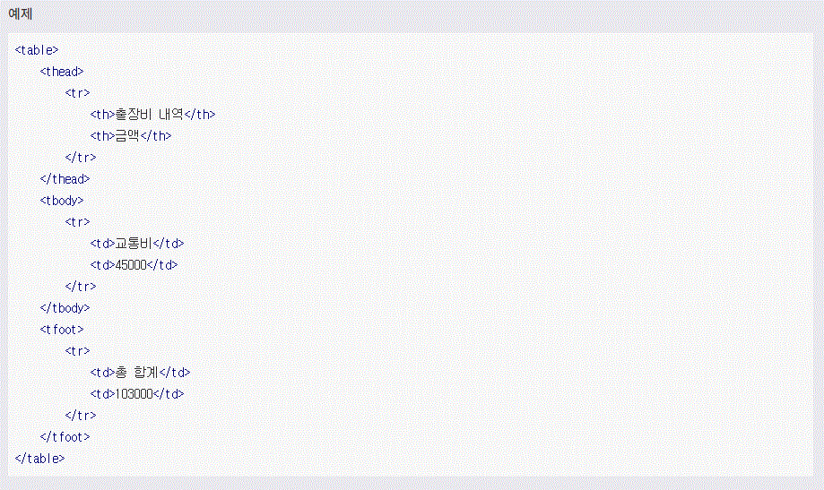

HTML
HTML(HyperText Markup Language)은 웹 문서를 표현하기 위한 하이퍼텍스트 마크업 언어입니다.
하이퍼텍스트란 문서에서 다른 문서로 이동하는 것을 말하며, 마크업이란 태그를 사용하여 콘텐츠의 의미를 부여하는 것을 말합니다.
태그(tag)
태그는 HTML에서 정보를 전달하는 방식을 의미합니다.

- 열린 태그(Opening tag) : 이것은 요소의 이름과 열고 닫는 꺽쇠 괄호로 구성됩니다. 요소가 시작부터 효과가 적용되기 시작합니다.
- 닫는 태그(Closing tag) : 이것은 요소의 이름 앞에 슬래시(/)가 있는것을 제외하면 열린 태그와 같습니다. 이것은 요소의 끝에 위치합니다. 닫는 태그를 적어주지 않는 것은 흔한 초심자의 오류이며, 이것은 이상한 결과를 낳게됩니다.
- 내용(Contend) : 요소의 내용이며, 이 경우 단순한 텍스트 입니다.
- 요소(element) : 여는 태그, 닫는 태그. 내용을 통틀어 요소라고 합니다.
속성(Attributes)
HTML 속성은 태그에 기본 기능 및 유형을 설정하고, 태그의 동작으로 제어하기 위한 용어입니다.

- 요소 이름 다음에 바로 오는 속성은 요소 이름과 속성 사이에 공백이 있어야 되고, 하나 이상의 속성들이 있는 경우엔 속성 사이에 공백이 있어야 합니다.
- 속성 이름 다음엔 등호(=)가 붙습니다.
- 속성 값은 열고 닫는 따옴표로 감싸야 합니다.
요소(Element)
요소는 HTML을 구성하는 가장 기본 단위입니다.
태그의 시작태그와 끝나는 태그 사이의 범위를 요소라고 합니다.
주석
주석 표시는 프로그램에 영향을 미치지 않으며, 설명이나 메모를 목적으로 사용합니다.
<!-- 주석표시 -->;
블록요소/인라인요소
블록요소는 박스, 인라인 요소는 텍스트를 의미합니다.
- 블록 엘리먼트(Block Element)
- 독립된 박스 영역으로 한 줄에 하나에 블록 요소만 표현 할 수 있습니다.(독립된 박스 영역이기 떄문에 오른쪽에 올수가 없음)
- 블록 요소에는 블록 요소와 인라인 요소를 포함 할 수 있습니다.
- 대표적인 것 : <div>, <p>, <ul>, <li>, <hr>, <address>
- 인라인 엘리먼트(Inline Element)
- 독립된 텍스트 영역으로 한 줄에 여러개의 인라인 요소를 표현 할 수 있습니다.(블록 엘리먼트와 다르게 가로로 박스가 올수 잇음.)
- 인라인 요소에는 블록요소가 포함 될 수 없지만, 인라인 요소는 포함 할 수 있습니다.
- 대표적인 것 : <span>, <a>, <img>, <input>, <button>, <br>
DTD 선언
웹 문서를 제작하기 위해서는 웹 문서 유형을 설정해야 합니다.
DTD(Document Type Declaration)을 설정하지 않거나 잘못 설정하면 브라우저에 따라 화면이 다르게 나오거나 렌더링이 달라지기 때문에 독타입을 설정해야 합니다.
<!-- HTML 4.01 Strict -->
<!DOCTYPE HTML PUBLIC "-//W3C//DTD HTML 4.01//EN" "http://www.w3.org/TR/html4/strict.dtd">
<!-- HTML 4.01 Transitional -->
<!DOCTYPE HTML PUBLIC "-//W3C//DTD HTML 4.01 Transitional//EN" "http://www.w3.org/TR/html4/loose.dtd">
<!-- HTML 4.01 Frameset -->
<!DOCTYPE HTML PUBLIC "-//W3C//DTD HTML 4.01 Frameset//EN" "http://www.w3.org/TR/html4/frameset.dtd">
<!-- XHTML 1.0 Strict -->
<!DOCTYPE html PUBLIC "-//W3C//DTD XHTML 1.0 Strict//EN" "http://www.w3.org/TR/xhtml1/DTD/xhtml1-strict.dtd">
<!-- XHTML 1.0 Transitional -->
<!DOCTYPE html PUBLIC "-//W3C//DTD XHTML 1.0 Transitional//EN" "http://www.w3.org/TR/xhtml1/DTD/xhtml1-transitional.dtd">
<!-- XHTML 1.0 Frameset -->
<!DOCTYPE html PUBLIC "-//W3C//DTD XHTML 1.0 Frameset//EN" "http://www.w3.org/TR/xhtml1/DTD/xhtml1-frameset.dtd">
<!-- XHTML 1.1 -->
<!DOCTYPE html PUBLIC "-//W3C//DTD XHTML 1.1//EN" "http://www.w3.org/TR/xhtml11/DTD/xhtml11.dtd">
<!-- html5 -->
<!DOCTYPE html>
언어 속성 설정
콘텐츠의 언어를 인식하고 언어 정보를 추출하는데 사용합니다.
미리 언어를 설정하면 효율성이 더 좋아집니다.
<!--HTML5 -->
<html lang="ko">
<!-- HTML4 -->
<html xmlns="http://www.w3.org/1999/xhtml" xml:lang="en">
문서 구조
HTML는 구조는 html 요소 안에 head 와 body로 이루어져 있습니다
- HTML 구조는 독타입 선언을 해주어야 하나의 웹 문서가 완성됩니다.
- HTML 문서는 상하 관계가 존재하는 계층적인 구조로 되어있습니다. 상위에 있는 요소와 하위에 있는 요소는 부모 자식 관계로 표현하며, 이러한 구조를 DOM 구조라고 합니다.
- HEAD 요소에는 제목, 사이트 정보, 스크립트, 스타일시트, 메타 정보등을 제공합니다.
- BODY 요소에는 문서 본문에 해당하는 콘텐츠 영역입니다.
<!DOCTYPE html>
<html lang="ko">
<head>
</head>
<body>
</body>
</html>
시멘틱 태그
시멘틱 태그는 모두 div 태그와 같은 기능을 수행하는 태그다.
- 이전의 html에서 header나 footer를 표현하기 위해 <div> 태그를 사용하여 개발자들이 자유롭게 class명이나 id를 정의하였다면, HTML5에서는 미리 정의된 태그를 사용하게 된다.
HTML5에 사라진 태그
| 태그 | 속성 |
|---|---|
| <acronym> | NATO, NASA, GUI등 영문 축약형 |
| <applet> | 임베디드 애플릿 |
| <basefont> | 글꼴의 형태 |
| <big> | 글꼴의 크기 |
| <center> | 텍스트 가운데 정렬 |
| <dir> | 디렉토리 리스트 |
| <font> | 글꼴 |
| <frame> | 프레임 |
| <frameset> | 프레임부속태그 |
| <noframes> | 프레임부속태그 |
| <strike> | 글꼴 취소 효과 |
| <tt> | 글꼴 타자기 효과 |
| <u> | 글꼴 언더라인 효과 |
| <xmp> | pre 태그와 동일 |
HTML5에 새로 나온 태그
- <audio> 태그는 음악이나 다른 오디오 스트림과 같은 소리를 들려준다.
src미디어 주소 제공autoplay미디어 자동 재생loop미디어 반복 재생controls사용자 에이전트가 제공하는 기본 컨트롤러를 사용
- <canvas> 태그는 스크립트를 제공하여 그래프, 게임 그래픽, 기타 비주얼 이미지를 그릴 수 있다.
widthcanvas의 너비 지정heightcanvas의 높이 지정- 좌표 공간에서의 크기를 조절하는 두가지 속성은 유효한 양의 정수값이어야 한다.
- canvas 요소에 동적인 작업을 하려면 스크립트 언어를 사용해야 한다.
- <command> 태그는 사용자가 실행할 수 있는 명령을 나타낸다.
type명령의 종류를 정의, radio, checkbox, command를 지정하며 기본값은 commandlabelcommand의 이름을 지정하며 값으로 빈 문자열을 쓸 수 없음title사용자에게 설명이나 힌트 제공iconcommand 요소에 보일 아이콘 지정disabled사용 불가능함을 나타냄checkedtype 속성이 checkbox나 radio일 때 checked 속성을 선언하면 선택된 상태로 나타남radiogrouptype 속성이 radio 일 때 토글된 커맨드의 이름을 지정할 수있는 속성
- <datalist> 태그는 input 요소에 대한 미리 정의된 옵션 집합을 나타낸다.
- input 요소에 "자동완성"기능을 제공하는데 사용된다. 사용자는 입력 데이터로 미리내용은 미리 정의된 옵션
- option 요소를 포함할 수 있다.
- input 요소에 묶여 있다.
- <details> 태그는 사용자가 보거나 숨길 수 있는 추가정보를 지정하고 열고 닫을 수 있는 대화형 도구를 만드는데 사용한다.
open세부 사항을 노출
- <embed> 태그는 HTML이 아닌 외부 애플리케이션이나 대화형 컨텐츠를 포함할 때 사용한다.
src포함하고자 하는 외부 자원의 주소 지정type인스턴스화 할 플러그인의 유효한 MIME 타입 지정width요소의 너비 정의height요소의 높이 정의
- <figcaption> 태그는 부모 요소인 figure 요소의 캡션이나 제목을 정의한다.
- <figure> 태그는 일러스트레이션, 도표, 사진, 코드 등과 자체 포함된 내용을 지정한다. 이 요소는 보통 문서의 흐름에서 단일 요소로 참조되어 제거되더라도 문서의 주된 흐름에 영향을 미치지 않는다.
- <hgroup> 태그는 섹션의 제목을 나타낸다. 부제목이나 태그영역 <h1> ~ <h6> 요소들을 그룹짓기 위해 사용한다.
- <keygen> 태그는 암호화를 위한 개인키와 공개키 쌍을 만들어낸다.
autofocus페이지를 로드할 때 요소가 자동으로 포커스를 받음challenge값과 함께 전달되는 문자열disabled값을 제출하지 않음form명시적으로 폼 소유자를 지정keytype키의 유형을 정의name폼 제출 시에 사용되는 폼 컨트롤의 이름을 나타냄- 폼 관련 요소에 속한다.
- 스크립트에서 form.elements와 fieldset.elements로 호출할 수 있다. (여기에서 form, fieldset은 해당 요소의 name 속성값)
- 레이블을 붙일 수 있다.
- 폼을 전송할 때 함께 전송된다.
- <mark> 태그는 문서 내에서 다른 문맥과의 관련성을 표시하기 위해 참조 목적으로 마킹, 혹은 하이라이팅 한 텍스트 집합을 나타낸다.
- 인용구의 특정한 부분으로 주의를 환기시키기 위해 mark 요소를 사용한다.
- "구문 강조"와는 다른 의미로 구문 강조에 쓰기엔 span 요소가 좀 더 적절하다.
- 원래는 강조되지 않았었던 텍스트를 인용문 일부에서 mark 요소로 하이라이트할 경우 일반적인 표현 관습대로 인용문 내의 mark 요소를 이태릭체로 표시할 수 있다.
- 텍스트에서 "중요성"(strong)을 나타내는 것과 "연관성"(mark)을 나타내는 것의 차이가 있다. 문장과 관련이 없으니 중요한 부분을 나타내고자 할때는 mark 요소보다는 strong 요소를 사용하는 것이 더 적합하다.
- <mark> 태그는 알려진 범위 내에서의 스칼라 측정 또는 분포 비율을 나타낸다.
value게이지에 표시하는 측정 값min범위의 최소 값max범위의 최대 값low'낮음' 범위의 값high'높음' 범위의 값optimum'최적' 범위의 값form명시적으로 폼 소유자 정의
- <output> 태그는 계산의 결과를 나타낸다.
for계산의 결과와 계산에 사용되었거나 계산에 영향을 미친 값을 나타내는 요소를 명시적으로 연결form폼 소유자와 요소를 명시적으로 연결name폼 제출시에 사용되는 폼 컨트롤의 이름
- <progress> 태그는 작업의 진행 상황을 나타낸다.
value진행된 작업의 값max최대 작업양form명시적으로 폼 소유자 정의
- <rp> 태그는 루비 주석을 지원하지 않는 사용자에게 루비 텍스트를 괄호로 둘러싸서 표현하기 위해 사용된다.
- <rt> 태그는 루비 텍스트의 루비 주석을 나타낸다.
- <ruby> 태그는 루비 주석을 정의한다. 루비 주석은 텍스트 주변(보통 위에)에 나타나는 텍스트로 주로 동아시아권 언어에서 발음이나 주석으로 사용된다.
- <source> 태그는 video 요소 및 audio 요소와 같은 미디어 요소에서 사용할 수 있는 대체 미디어 자원을 정의한다.
src미디어 자원 주소 정의type사용할 수 있는 타입의 자원인지 확인media사용할 수 있는 미디어 자원인지 확인
- <track> 태그는 video 요소 및 audio 요소와 같은 미디어 요소에 대한 텍스트 트랙을 지정한다. 이 요소는 자막파일이나 텍스트를 포함하는 다른 파일을 자정하는데 사용된다.
kind텍스트 트랙의 종류 정의src텍스트 트랙 데이터의 주소 정의srclang텍스트 트랙 데이터의 언어 정의label사용자가 읽을 수 있는 트랙 제목 정의default기본 트랙 정의
- <video> 태그는 비디오나 영화를 재생하는데 사용된다.
src미디어 자원의 주소를 제공poster비디오를 사용할 수 없을때 보여줄 이미지preloadnone, metadata, auto 키워드를 지정하여 미디어의 다운로드 상태 결정autoplay미디어를 자동 재생loop미디어를 반복 재생audio오디오 채널을 제어controls사용자 에이전트가 제공하는 기본 콘트롤러를 사용width미디어의 가로 크기를 정의height미디어의 세로 크기를 정의- src 속성이 있으면 track 요소를 자식 요소로 포함할 수 있다.
- src 속성이 없으면 source 요소와 track 요소를 자식 요소로 포함할 수 있다.
- video 요소, audio 요소와 같은 미디어 요소는 자식 요소로 포함할 수 없다.
- video 요소를 지원하지 않는 오래된 웹 브라우저에서 구형 비디오 플러그인을 시도하거나 사용자가 비디오 컨텐츠에 접근할 수 있는 방법을 제시하는 텍스트를 보여줄 수 있도록 요소 내부에 컨텐츠를 제공할 수 있다.
웹 표준과 웹 접근성
- tium)가 권고한 표준안에 따라 웹 페이지를 제작하는 기법을 의미합니다. 웹 표준의 궁극적인 목적은 웹사이트에 접속한 사용자가 어떠한 운영체제나 브라우저를 사용하더라도 동일한 결과를 보이게 하는 것 입니다.
- 웹 접근성이란 장애인, 고령자 등 모든 사용자가 어떠한 기술이나 환경에서도 전문적인 능력 없이 웹사이트에서 제공하는 모든 정보를 동등하게 접근하고 이해할 수 있는 권리입니다.
html5shiv
HTML5의 Element를 HTML5를 지원하지 않는 IE 9 이하 하위 버전 등에서 사용할 수 있도록 해 주는 Javascript 라이브러리이다.
<section>
section 태그는 일반적으로 문서의 콘텐츠 영역을 설정할 때 사용합니다.
- 콘텐츠와 과련된 한 가지 주제 영역을 의미합니다.
section요소는 문장이나 스타일링 요소가 아니기 때문에 편의나 영역을 위하이라면div태그가 좋습니다.section요소는 제목이 없는 경우 섹션이라고 할 수 없기 때문에 제목을 제공해야 합니다.section요소는 일반적인 영역의 주제가 아니라면 구체적인 요소(ariclem,aside,nav)를 대신 사용하는 것이 더 적절합니다.
<nav>
nav 태그는 웹 페이지 내에서 이동 할 수 있는 네비게이션 리으 그룹을 설정합니다.
nav는 문서의 핵심적인 페이지 메뉴 및 서브 메뉴에서 사용합니다.section요소는 문서에서 주로 한번만 사용합니다.- 문서 안에 링크가 포함된 콘텐츠는
nav를 사용하지 않습니다. nav는 핵심적인 네비게이션에 사용해야 하므로 푸터 내에 링크 그룹의 사용은 적절하지 않습니다.
<main>
main태그는 웹 문서에서 주요 콘텐츠 영역을 나타낼 때 사용합니다.
main태그는 웹 페이지에서 한번만 사용할 수 있으며, 접근성과 검색 영역 노출을 향상시킵니다.article,aside,footer,nav의 하위 요소로 사용할 수 없습니다.- 문서 안에 링크가 포함된 콘텐츠는
nav를 사용하지 않습니다.
<aside>
aside태그는 메인 콘텐츠와 관련된 사이트 콘텐츠 영역을 설정합니다.
aside는 메인 콘텐츠와 관련된 사이드의 정보, 광고 등 부분 적인 정보를 그룹화할 때 사용합니다.
<header>
header태그는 웹 문서의 헤더 영역을 설정합니다.
header는 웹 페이지의 소개, 네비게이션 영역, 검색영역, 로고영역을 포함하는 영역입니다.header태그에는 제목 태그가 포함 될수 있으며, 필수 조건은 아닙니다.header는 섹션 콘텐츠가 아닌 그룹화하기 위한 요소이므로section요소를 포함할 수 없습니다.
<footer>
footer태그는 웹 문서의 푸터 영역을 설정합니다.
footer태그는 저작권 정보, 회사 정보, 관련 링크, 바닥글, 주소사이트 정보 등을 포함하는 콘텐츠 영역입니다.footer태그는 섹션 콘텐츠가 아닌 그룹을 나타내는 요소이며,sectionarticleaside태그를 포함할수 있습니다.
<artilce>
artilce태그는 웹 문서의 독립적인 항목을 나타내는 콘텐츠를 의미합니다.
artilce태그는 신문기사, 잡지,블로그 항복, 게시판 글 등의 독립적인 항목을 나타냅니다.section태그는 하나의 주제를 나타낸다면,article태그는 주제를 묶은 독립적인 콘텐츠 입니다.section요소 안에article요소를 쓸 수 있으며,article요소 안에도section요소를 쓸 수 있습니다.
<div>
div태그는 문서의 섹션을 만들거나 영역을 만들 때 사용합니다.
<p>
p 태그는 문단을 쓸 때 사용합니다.
<ul>
ul 태그는 순서가 없는 목록을 쓸 때 사용합니다.
<li>
li 태그는 목록의 항목을 쓸 때 사용합니다.
<ol>
ol 태그는 순서가 있는 목록을 쓸 때 사용합니다.
<a>
a 태그는 하이퍼 링크를 설정합니다.
<title>
"title" 태그는 해당 문서의 제목(title)을 정의할 때 사용합니다.
- 이러한
"title"요소는 브라우저의 제목 표시줄이나 페이지 탭의 제목으로 사용되며, 즐겨찾기 등록 시 해당 페이지에 대한 즐겨찾기 이름으로 사용됩니다. 또한, 검색 엔진에 의한 검색 결과 페이지에서도 해당 페이지의 제목으로 나타납니다. - 모든 HTML 문서에는
"title"요소가 필요하지만, 두 개 이상의"title"요소를 포함할 수는 없습니다. 만약 HTML 문서에"title"요소가 존재하지 않으면, 해당 문서는 HTML 유효성 검사를 통과하지 못 합니다.
<meta>
meat 태그는 웹 문서에 대한 여러가지 정보를 제공합니다.
| 메타데이터 | 설명 |
|---|---|
| charset | 웹 페이지 언어를 설정합니다. |
| author | 웹 페이지를 만든 사람을 설정합니다. |
| description | 웹 페이지에 대한 설명을 설정합니다. |
| keywords | 웹 페이지에 대한 키워드를 설정합니다. |
| application-name | 웹 페이지에 관련된 응용프로그램 이름을 설정합니다. |
| generator | 웹 페이지에서 만든 소프트웨어의 이름을 설정합니다. |
<!-- HTML5 언어 설정 -->
<meta charset="UTF-8">
<!-- HTML4 언어 설정 -->
<meta http-equiv="Content-Type" content="text/html;charset=UTF-8">
<!-- 웹 문서에 대한 제작자 설정 -->
<meta name="author" content="webstoryboy">
<!-- 웹 문서에 대한 설명 -->
<meta name="description" content="이 사이트는 무슨무슨 사이트입니다.">
<!-- 웹 문서에 대한 키워드 설정 -->
<meta name="keyword" content="키워드, 키워드, 키워드">
<!-- 웹 문서에 대한 웹 응용 프로그램 이름 -->
<meta name="application-name" content="응용 프로그램 이름">
<!-- 웹 문서에 대한 소프트웨어 이름 -->
<meta name="generator" content="소프트웨어 이름">
<table>
"table"태그는 데이터를 포함하는 셀(cell)들의 행과 열로 구성된 2차원 테이블을 정의할 때 사용합니다.
- 이러한 테이블은
"table"요소와 자식 요소인 하나 이상의tr,th,td요소들로 구성됩니다.tr요소는 테이블의 각 행(row)을 정의하고,th요소는 각 열의 제목을 정의합니다. 또한,td요소는 하나의 테이블 셀(cell)을 정의합니다.
| 태그 | 설명 |
|---|---|
| tr | table row의 약자로 표의 제목을 쓰는 역할 |
| td | table row의 약자로 가로줄을 만드는 역할 |
| tbody | tbody data의 약자로, 셀을 만드는 역할: 테이블 내용 |
| thead | 테이블 제목 |
| tfoot | 끝에 오는 내용 |
| caption | 요소는 표의 설명 또는 제목을 나타냅니다. |
| col | 표의 열을 나타내며, 열에 속하는 칸에 공통된 의미를 부여할 때 사용합니다. |
| colroup | 요소는 표의 열을 묶는 그룹을 정의합니다. |
| colspan | 가로로 표의 열을 묶는 태그 |
| rowspan | 세로로 표의 열을 묶는 태그 |
<tr>
tr 태그는 테이블에서 셀들로 이루어진 하나의 행(row)을 정의할 때 사용합니다.
tr요소는 하나 이상의th요소(data cell)나td요소(header cell)를 포함할 수 있습니다.
<td>
td 태그는 HTML 테이블에서 하나의 데이터 셀(data cell)을 정의할 때 사용합니다.
- HTML 테이블를 구성하는 셀(cell)은 두 종류로 구분할 수 있으며, 하나는
th요소를 사용한 헤더 정보를 저장하는 헤더 셀과 또 다른 하나는td요소를 사용한 일반적인 데이터를 저장하는 데이터 셀입니다. th요소 내의 텍스트는 기본적으로 굵은 폰트로 중앙 정렬되며,td요소 내의 텍스트는 일반적인 두께의 폰트로 좌측 정렬됩니다.colspan 속성과 rowspan 속성을 사용하면 콘텐츠를 여러 셀에 걸쳐 나타낼 수 있습니다.
<tbody>
tbody 태그는 HTML 테이블에서 내용 콘텐츠(body content)들을 하나의 그룹으로 묶을 때 사용합니다.
tbody요소는 테이블의 각 영역(header, body, footer)을 명시하기 위해theadtfoot요소와 함께 사용됩니다.브라우저는 이러한 요소들을 사용하여 테이블의 헤더나 푸터와는 독립적으로 테이블의 내용만 스크롤되게 할 수 있으며, 여러 페이지에 걸쳐 있는 큰 테이블을 인쇄할 때 각 페이지의 상단과 하단에 테이블의 헤더와 푸터가 모두 인쇄되도록 할 수도 있습니다.
<thead>
thead 태그는 HTML 테이블에서 헤더 콘텐츠(header content)들을 하나의 그룹으로 묶을 때 사용합니다.
thead요소는 테이블의 각 영역(header, body, footer)을 명시하기 위해tbodytfoot요소와 함께 사용됩니다.브라우저는 이러한 요소들을 사용하여 테이블의 헤더나 푸터와는 독립적으로 테이블의 내용만 스크롤되게 할 수 있으며, 여러 페이지에 걸쳐 있는 큰 테이블을 인쇄할 때 각 페이지의 상단과 하단에 테이블의 헤더와 푸터가 모두 인쇄되도록 할 수도 있습니다.thead와tbodytfoot요소는 기본적으로 웹 페이지의 레이아웃에 전혀 영향을 주지 않지만, 이 요소들의 스타일을 CSS를 사용하여 변경할 수는 있습니다.

<tfoot>
tfoot 태그는 HTML 테이블에서 푸터 콘텐츠(footer content)들을 하나의 그룹으로 묶을 때 사용합니다.
tfoot요소는 테이블의 각 영역(header, body, footer)을 명시하기 위해theadtbody요소와 함께 사용됩니다.- 브라우저는 이러한 요소들을 사용하여 테이블의 헤더나 푸터와는 독립적으로 테이블의 내용만 스크롤되게 할 수 있으며, 여러 페이지에 걸쳐 있는 큰 테이블을 인쇄할 때 각 페이지의 상단과 하단에 테이블의 헤더와 푸터가 모두 인쇄되도록 할 수도 있습니다.
<caption>
caption 태그는 테이블의 캡션(caption, 테이블이나 사진, 삽화 등에 붙는 설명)을 정의할 때 사용합니다.
- 표(table)에 캡션 붙일 때 caption 태그를 사용합니다.
- 기본 위치는 표 위 가운데입니다.
- 캡션 위치는 CSS의
caption-side로 정합니다.
<col>
-
col 요소는 각 행(row)이나 셀(cell)의 스타일을 반복하지 않고, 열(column)마다 각각 다른 스타일을 적용하고싶을 때 유용하게 사용할 수 있습니다.
<colgroup>
colgroup 태그는 테이블에서 서식 지정을 위해 하나 이상의 열을 그룹으로 묶을 때 사용합니다.
colgroup요소는 각 행(row)이나 셀(cell)의 스타일을 반복하지 않고, 열(column) 전체에 다른 스타일을 적용하고 싶을 때 유용하게 사용할 수 있습니다.또한,colgroup요소 내부에col요소를 포함하여 열마다 각각 다른 스타일을 적용할 수도 있습니다.colgroup요소는table요소의 자식 요소로, 모든caption요소보다 뒤에 위치해야 하며 모든"thead, tbody, tfoot, tr,"요소보다는 앞에 위치해야 합니다.
<h1~h6>
h 태그는 제목을 표현할 수 있는 태그입니다. 가장 큰 h1 태그부터 가장 작은 h6태그까지 있습니다.
<h>태그는 위아래로 약간의 여백이 자동으로 삽입됩니다.- 검색엔진은 각 웹 사이트의 내용을
<h>태그를 이용하여 키워드를 수집하고, 그 내용을 파악합니다. 따라서 제목은<h>태그로 작성해야만 검색엔진에 의해 제대로 검색될 확률을 높일 수 있습니다.
<br>
br 태그는 줄바꿈을 하는 태그입니다.
<hr>
hr 태그는 단락을 나눌 때나 내용상의 구분을 표현하고자 할 때 수평 가로 구분선을 사용합니다.
<dl>
dl 태그는 용어(term)와 그에 대한 설명(description)을 리스트 형식으로 정의할 때 사용합니다.
<dd>
dd 태그는 용어와 그에 대한 설명을 리스트 형식으로 보여주는 dl 요소에서 설명(description) 부분을 정의할 때 사용합니다.
<dt>
dt 태그는 용어와 그에 대한 설명을 리스트 형식으로 보여주는 <dl> 요소에서 용어(term) 부분을 정의할 때 사용합니다.
<span>
span 태그는 HTML 문서에서 인라인 요소(inline-element)들을 하나로 묶을 때 사용합니다.
<em>
em 태그는 강조된 텍스트(emphasized text)를 표현할 때 사용합니다. em 요소의 콘텐츠를 기울기를 줘서 표현하며 텍스트만 강조합니다.
<strong>
태그는 해당 콘텐츠의 중요성이나 심각함, 긴급함 등을 강조할 때 사용합니다. 브라우저는 일반적으로 <strong> 요소의 콘텐츠를 굵은 텍스트로 표현합니다.
<address>
address 태그는 소유자 또는 작성자의 연락처를 나타내는 태그입니다.
- body 태그 안에 있으면 문서의 소유자 또는 작성자의 연락처를 나타낸다.
- article 태그 안에 있으면 기사의 소유자 또는 작성자의 연락처를 나타낸다.
- 기본 모양은 기울임꼴이다.
<form>
form 태그는 웹 페이지에서의 입력 양식을 의미하며, 로그인 창이나 회원가입 폼 등이 이에 해당됩니다. (전체 양식을 의미하며, 화면에 보이지 않는 추상적인 태그이다.)
name폼의 이름action폼 데이터가 전송되는 백엔드 url(값을 전달할 페이지를 입력한다.)method폼 전송 방식 (GET / POST)- get 방식의 경우 URL에 전달하는 값이 표시된다.
- post 방식으로 값을 전달하면 URL에 값이 표시되지 않는다.
<fieldset>
fieldset 태그는 <form>요소에서 연관된 요소들을 하나의 그룹으로 묶을 때 사용합니다.
- 하나의 그룹으로 묶은 요소들 주변으로 박스 모양의 선을 그려준다.
- <legend> 요소를 사용하면 <fieldset> 요소의 캡션(caption)을 정의할 수 있다.
- HTML5에서 새롭게 추가된 속성
- disabled :
disabled<fieldset>요소에 포함된 <form>요소들이 비활성화됨을 명시함 - form :
form id<fieldset>요소에 포함될 하나 이상의 <form>요소를 명시함 - name :
이름<fieldset>요소의 이름을 명시함
- disabled :
<legend>
legend 태그는 fieldset 요소의 제목(LEGEND)을 표시한다. fieldset 요소를 이용하여 여러 개의 컨트롤들을 묶었으면 이 묶음이 어떤 성격 또는 용도인지 알려줄 필요가 있으며, 이때 legend 요소를 사용합니다.
<input>
input 태그는 사용자가 데이터를 입력할 수 있는 입력 영역을 지정하는 것입니다.
| 속성 | 속성값 | 설명 |
|---|---|---|
| type | text | 기본값으로 한 줄의 텍스트 입력 칸을 만든다. |
| password | text 속성값과 같지만, 문자를 숨겨서 표시(별표처럼) | |
| button | 누름 버튼을 만든다. | |
| submit | 전송 버튼을 만든다. | |
| reset | 재설정 버튼을 만든다. | |
| radio | 한개만 선택할 수 있는 컴포넌트 | |
| checkbox | 체크박스를 만든다. | |
| file | 파일 선택 창을 만든다. | |
| hidden | 사용자에게 보이지 않는 숨김 창을 만든다. | |
| image | 이미지로 된 전송 버튼을 만든다. src 속성으로 이미지 url 지정 | |
| name | text | input 요소의 이름(xhtml에서 name은 퇴화태그로 id를 사용) |
| value | text | input 요소의 값 |
| size | number | input 요소의 너비 |
| src | url | submit 버튼(type="image"일때)으로 사용할 이미지 주소 |
| maxlength | number | input 요소에서 허락된 문자열의 최대 숫자 |
| checked | checked | type="checked"나 "radio"일 경우, 페이지가 로드될 때 요소가 미리 선택 되어있음 |
| accept | media_type | type="file"일 경우 서버가 받아들일 파일의 종류 |
| align | left right top middle bottom |
type="image"일 경우, 이미지 입력의 정렬(html5에서 지원 안함) |
| alt | text | type="image"일 경우, 이미지 대체 텍스트 |
| disabled | disabled | input 요소가 비활성화 상태 |
| readonly | readonly | 입력 영역이 읽기만 가능하게 지정 |
HTML5 새로 추가된 속성
| 속성 | 속성값 | 설명 |
|---|---|---|
| autocomplete | on/off | input 요소 자동 완성 여부 지정 |
| autofocus | autofocus | input 요소 자동으로 포커스 됨 |
| form | form_id | input 요소가 속한 하나 이상의 form을 지정 |
| formaction | url | 양식이 전송될 때(type="submit", "image"일 때) 입력 제어 장치를 처리할 파일 주소 |
| formenctype | 서버에 전송될 때(type="submit", "image"일 때) 데이터의 부호화 방식 (application/x-www-form-urlencoded, text/plain 등) | |
| formmethod | get/post | action url에 대한(type="submit", "image"일 때) 자료를 보낼 때 HTTP 방법 |
| formnovalidate | formnovalidate | 양식 요소가 전송 될 때 유효화되지 않아야 하는지 지정 |
| formtarget | type="submit" , "image"일 때 창이 열릴 곳 _blank, _self, _parent, _top, frame 이름 중 선택 |
|
| height | pixels | input 요소의 높이(type="image"일 때) |
| width | pixels | input 요소의 너비(type="image"일 때) |
| list | datalist_id | input 요소를 위한 미리 지정된 옵션을 담은 datalist 요소를 참조 |
| max | number/date | input 요소의 최대 값 |
| min | number/date | input 요소의 최소 값 |
| step | number | 입력 영역의 요구되는 숫자 간격 |
| multiple | multiple | 사용자가 하나 이상의 값을 입력할 수 있도록 지정 |
| pattern | regexp | input 요소값이 체크될 보통 표현 |
| placeholder | text | input 요소의 예상된 값을 설명하는 짧은 힌트 |
| required | required | 입력 영역이 양식 전송 전에 채워져야함을 지정 |
<label>
label 태그는 입력 양식창(input, button, textarea 등)을 설명하는 이름표이다. label 태그에 적힌 텍스트를 선택하면, label과 연결된 입력 양식창이 선택됩니다.
<button>
button 태그는 클릭할 수 있는 버튼을 정의할 때 사용합니다.
- 요소 안에는 텍스트나 이미지와 같은 콘텐츠를 삽입할 수 있지만, <input> 요소를 사용한 버튼에는 이와 같은 콘텐츠를 삽입할 수 없다.
- 브라우저별로 <button> 요소에 대해 서로 다른 기본 타입을 사용할 수 있으므로, <button> 요소에는 언제나 type 속성값을 명시하는 것이 좋다.
| 속성명 | 속성값 | 설명 |
|---|---|---|
| autofocus | autofocus | 페이지가 로드될 때 자동으로 포커스가 버튼으로 이동됨을 명시함. |
| disabled | disabled | 해당 버튼이 비활성화됨을 명시함. |
| form | form id | 해당 버튼이 포함될 하나 이상의 <form> 요소를 명시함. |
| formaction | URL | 폼 데이터(form data)가 서버로 제출될 때 해당 데이터가 도착할 URL을 명시함. (단, <button> 요소의 type 속성값이 “submit”인 경우에만 사용할 수 있음) |
| formenctype | application/x-www-form-urlencoded multipart/form-data text/plain |
폼 데이터(form data)가 서버로 제출될 때 해당 데이터가 인코딩(encoding)되는 방식을 명시함. (단, <button> 요소의 type 속성값이 “submit”인 경우에만 사용할 수 있음) |
| formmethod | get post |
폼 데이터(form data)가 서버로 제출될 때 사용할 HTTP 메소드를 명시함. (단, <button> 요소의 type 속성값이 “submit”인 경우에만 사용할 수 있음) |
| formnovalidate | formnovalidate | 폼 데이터(form data)가 서버로 제출될 때 해당 데이터의 유효성 검사를 하지 않음을 명시함. (단, <button> 요소의 type 속성값이 “submit”인 경우에만 사용할 수 있음) |
| formtarget | _blank _self _parent _top 프레임 이름 |
폼 데이터(form data)가 서버로 제출된 후 받은 응답(response) 데이터를 어디에 표시할 지를 명시함. (단, <button> 요소의 type 속성값이 “submit”인 경우에만 사용할 수 있음) |
| name | 텍스트 | 해당 버튼의 이름(name)을 명시함. |
| type | button reset submit |
해당 버튼의 타입(type)을 명시함. |
| value | 텍스트 | 해당 버튼의 초기값(value)를 명시함. |
<i>
i 태그는 음성이나 감정 등의 텍스트를 정의합니다.
- 기술적인 구문이나, 외국어, 사상, 생각, 선박이름, 주변 콘텐츠와 다른 방식으로 표시하는 텍스트를 강조할 때도 사용합니다.
- 글씨를 굵게 표현할 때 쓰는 <b> 태그, 글씨를 강조할 때 쓰는 <em> 태그, 글씨의 중요성을 강조할 때 쓰는 <strong> 태그, 참고용으로 표시할 때 쓰는 <mark> 태그에 해당되지 않을 때 고려해서 사용합니다.
- HTML4에서 <i> 태그는 이탤릭체로 표현하기 위해 사용하였지만, HTML5에서 <i> 태그는 기술적인 구문, 언어 및 사상, 선박이름에 정의하는데 사용합니다.
<figure>
figure 태그는 그림, 도표, 사진, 코드 등의 표현을 정의합니다.
- 그림, 도표, 사진, 코드 등의 표현을 정의합니다.
- 문서 흐름에 영향을 미치지 않으며, 다른 페이지 또는 부록으로 이동할 수 있습니다.
- <figcaption> 요소를 포함합니다.
- HTML5의 새로운 기능입니다.
<figcaption>
figcaption 태그는 figure 요소의 제목을 정의합니다.
- figure 요소의 처음 또는 마지막에 설정합니다
- HTML5의 새로운 기능입니다
- HTML5 요소를 지원하지 못하는 구 브라우저에서는 새로운 요소는 무시하고 요소의 내용만 표시됩니다
<video>
<video>태그는 video태그는 웹페이지에 영상파일을 재생할 때 사용합니다. 예전에는 웹페이지에 동영상을 재생하기 위해 외부 프로그램을 설치하는등 복잡한 과정이 필요했으나 지금은 video태그로 간단하게 이를 구현할 수 있습니다.
| 속성 | 설명 |
|---|---|
| src | 비디오 파일의 주소 |
| controls | 컨트롤러 표시 |
| autoplay | 자동 재생 |
| loop | 반복 재생 |
| width | 영상의 가로길이 |
| height | 영상의 세로길이 |
| muted | 음소거 |